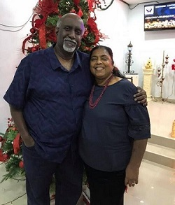

The Founder
Ps.Jacop David
Picture of Ps.Jacop David with his wife
An early education in Gopeng , Kampar, Teluk Intan and finally finished his high school in Klang. Received a Diploma in Worker’s Institute of Mechanical Engineering and worked in Inchape, Petaling Jaya as a technician. In 1982 – 1984 graduated with he graduated from Diploma in Theology from Malaysian Tamil Bible Institute. Married to Bridget and have 4 children. Since then worked in Social concern in Lumut Damar Laut, Pantai Remise in Perak. Later in 1988 -1989, worked in MTBI as a Business Manager. From 1990 – 1993 worked in Rumah Faith in Kajang as an Administrator cum supervisor. He then attended a short term course in New Zealand a foster home studies in care giving Foster Home. After returning to Malaysia, in December 1993 together with his wife Bridget, he established Shepherd’s Centre Foundation starting with 8 children.